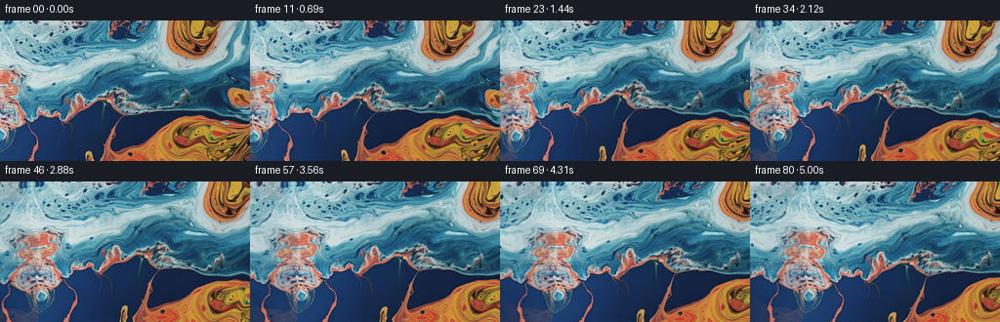
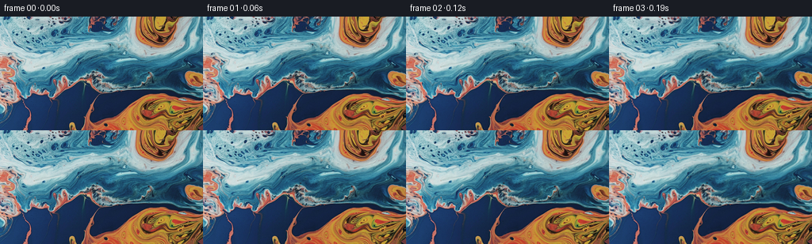
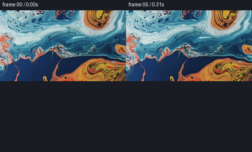

← 本轮 smoke 总览traex/DeepSeek-V4.1-Flash · 0001_s2
vision-agent · 256×144 · 16.0 FPS · 81 帧 · 状态 complete · 输出 tokens 24747
原始任务a close up of a blue and orange liquid, camera pans left
当前保存结果
已保存候选与代码修改
这里按时间展示外部捕获的候选，每份均可单独播放。保存新版本不等于完成视觉检查；下方工具证据记录实际看过的图。
候选 01 · 2026-11-08T23:50:40.272355+00:00 · 点开播放与检查图
inspection.png

transition_check.png

代码变化
--- 上一保存版本
+++ 本次保存版本
@@ -0,0 +1,151 @@
+from pathlib import Path
+
+import cv2
+import numpy as np
+from PIL import Image
+
+import artifact_io
+
+
+CASE_DIR = Path(__file__).resolve().parent
+WIDTH = 256
+HEIGHT = 144
+N_FRAMES = 81
+FPS = 16.0
+PAD_LEFT = 72
+PAD_RIGHT = 8
+
+
+def smoothstep(value):
+ value = np.clip(value, 0.0, 1.0)
+ return value * value * (3.0 - 2.0 * value)
+
+
+def build_panorama(image):
+ """Reflect a narrow strip beyond the left edge for the camera reveal."""
+ pano = np.empty((HEIGHT, PAD_LEFT + WIDTH + PAD_RIGHT, 3), dtype=np.float32)
+ pano[:, PAD_LEFT : PAD_LEFT + WIDTH] = image
+
+ # Reflect without repeating the boundary column. A small vertical shear
+ # prevents the continuation from reading as a rigid mirror image.
+ strip = image[:, 1 : PAD_LEFT + 1][:, ::-1]
+ yy, xx = np.mgrid[0:HEIGHT, 0:PAD_LEFT].astype(np.float32)
+ shear = 1.4 * np.sin(np.pi * xx / PAD_LEFT) * (yy / HEIGHT - 0.5)
+ map_x = np.clip(xx + shear, 0, WIDTH - 1)
+ map_y = np.clip(yy + 1.2 * np.sin(2.0 * np.pi * xx / PAD_LEFT), 0, HEIGHT - 1)
+ extension = cv2.remap(
+ strip,
+ map_x,
+ map_y,
+ interpolation=cv2.INTER_CUBIC,
+ borderMode=cv2.BORDER_REFLECT_101,
+ )
+
+ # Blend the outer part of the reflected strip toward neighboring source
+ # colors, preserving the detail at the actual frame boundary.
+ outer = image[:, 105:105 + PAD_LEFT][:, ::-1]
+ weight = smoothstep(xx / PAD_LEFT)[..., None] * 0.22
+ extension = extension * (1.0 - weight) + outer * weight
+ pano[:, :PAD_LEFT] = extension
+ pano[:, PAD_LEFT + WIDTH :] = image[:, -PAD_RIGHT:][:, ::-1]
+ return pano
+
+
+def flow_displacement(x, y, t):
+ """Smooth, time-varying liquid displacement in panorama coordinates."""
+ ramp = smoothstep(t / 0.75)
+ ramp *= 1.0 - 0.08 * smoothstep((t - 4.0) / 1.05)
+
+ u = (
+ 2.8 * np.sin(2.0 * np.pi * (y / 63.0 + 0.061 * t) + 0.35)
+ + 1.45 * np.sin(2.0 * np.pi * ((x + 0.62 * y) / 113.0 - 0.043 * t) + 1.6)
+ + 0.70 * np.sin(2.0 * np.pi * ((0.35 * x - y) / 31.0 + 0.105 * t) + 0.2)
+ )
+ v = (
+ 1.75 * np.cos(2.0 * np.pi * (x / 87.0 - 0.048 * t) + 1.1)
+ + 1.05 * np.sin(2.0 * np.pi * ((0.72 * x + y) / 58.0 + 0.071 * t) + 2.0)
+ + 0.55 * np.cos(2.0 * np.pi * ((x - 0.28 * y) / 27.0 - 0.088 * t) + 0.7)
+ )
+ return u * ramp, v * ramp
+
+
+def apply_vortices(x, y, t):
+ """Blend two slow local rotations into the inverse coordinate map."""
+ ramp = smoothstep(t / 1.1)
+ dx_total = np.zeros_like(x)
+ dy_total = np.zeros_like(y)
+
+ vortices = (
+ (76.0 + 9.0 * np.sin(0.23 * t), 58.0 + 5.0 * np.cos(0.31 * t), 72.0, 0.135),
+ (226.0 - 8.0 * np.sin(0.19 * t + 0.7), 101.0 + 6.0 * np.sin(0.27 * t), 66.0, -0.105),
+ (168.0 + 5.0 * np.sin(0.16 * t + 1.9), 18.0 + 4.0 * np.cos(0.21 * t), 45.0, 0.065),
+ )
+ for cx, cy, sigma, strength in vortices:
+ dx = x - cx
+ dy = y - cy
+ weight = np.exp(-(dx * dx + dy * dy) / (2.0 * sigma * sigma)) * ramp
+ angle = strength * np.sin(np.pi * np.clip(t / 5.0625, 0.0, 1.0))
+ cos_a = np.cos(angle)
+ sin_a = np.sin(angle)
+ rx = cos_a * dx - sin_a * dy
+ ry = sin_a * dx + cos_a * dy
+ dx_total += (rx - dx) * weight
+ dy_total += (ry - dy) * weight
+ return x + dx_total, y + dy_total
+
+
+def render_frame(pano, original, frame_index):
+ if frame_index == 0:
+ return original.copy()
+
+ t = frame_index / FPS
+ progress = frame_index / (N_FRAMES - 1)
+ pan = 56.0 * smoothstep(progress)
+
+ yy, xx = np.mgrid[0:HEIGHT, 0:WIDTH].astype(np.float32)
+ # A leftward camera pan moves scene content to the right in the image.
+ px = xx + PAD_LEFT - pan
+ py = yy.copy()
+
+ px, py = apply_vortices(px, py, t)
+ u, v = flow_displacement(px, py, t)
+ px = px - u
+ py = py - v
+
+ # The broad dark current near the bottom gets a little extra shearing,
+ # while the pale upper current travels in the opposite direction.
+ bottom = smoothstep((yy - 88.0) / 44.0)
+ upper = 1.0 - smoothstep((yy - 56.0) / 38.0)
+ px += bottom * 1.3 * np.sin(2.0 * np.pi * (yy / 55.0 - 0.052 * t))
+ px -= upper * 0.9 * np.sin(2.0 * np.pi * (yy / 47.0 + 0.041 * t))
+
+ warped = cv2.remap(
+ pano,
+ px.astype(np.float32),
+ py.astype(np.float32),
+ interpolation=cv2.INTER_CUBIC,
+ borderMode=cv2.BORDER_REFLECT_101,
+ )
+
+ # Let the sheen travel subtly with the surface without changing the broad
+ # color relationships of the original painting.
+ light = 0.018 * np.sin(2.0 * np.pi * (xx / 171.0 - 0.035 * t))
+ light += 0.010 * np.sin(2.0 * np.pi * (yy / 79.0 + 0.027 * t) + 0.6)
+ warped *= (1.0 + light[..., None])
+ return np.clip(warped, 0, 255).astype(np.uint8)
+
+
+def main():
+ original = np.asarray(Image.open(CASE_DIR / "first_frame.png").convert("RGB"), dtype=np.uint8)
+ assert original.shape == (HEIGHT, WIDTH, 3)
+ pano = build_panorama(original.astype(np.float32))
+
+ frames = np.empty((N_FRAMES, HEIGHT, WIDTH, 3), dtype=np.uint8)
+ for index in range(N_FRAMES):
+ frames[index] = render_frame(pano, original, index)
+
+ artifact_io.save(frames, CASE_DIR)
+
+
+if __name__ == "__main__":
+ main()
候选 02 · 2026-11-08T23:50:45.234587+00:00 · 点开播放与检查图
inspection.png

transition_check.png

代码变化
代码未变化；重新保存了产物。
候选 03 · 2026-11-08T23:52:54.179694+00:00 · 点开播放与检查图
inspection.png

transition_check.png

代码变化
--- 上一保存版本
+++ 本次保存版本
@@ -1,6 +1,8 @@
from pathlib import Path
+import subprocess
import cv2
+import imageio_ffmpeg
import numpy as np
from PIL import Image
@@ -145,6 +147,34 @@
frames[index] = render_frame(pano, original, index)
artifact_io.save(frames, CASE_DIR)
+ subprocess.run(
+ [
+ imageio_ffmpeg.get_ffmpeg_exe(),
+ "-y",
+ "-hide_banner",
+ "-loglevel",
+ "error",
+ "-framerate",
+ str(int(FPS)),
+ "-i",
+ "frames/%02d.png",
+ "-frames:v",
+ str(N_FRAMES),
+ "-c:v",
+ "libx264",
+ "-preset",
+ "slow",
+ "-crf",
+ "16",
+ "-pix_fmt",
+ "yuv420p",
+ "-movflags",
+ "+faststart",
+ "video.mp4",
+ ],
+ cwd=CASE_DIR,
+ check=True,
+ )
if __name__ == "__main__":
可观测工具行为
命令 1 · 2026-11-08T23:49:03.354957+00:00/bin/bash -c "pwd && rg --files -g '"'!**/.git/**'"' | sed -n '1,200p'"
exit 0 命令 2 · 2026-11-08T23:49:03.554096+00:00/bin/bash -c "sed -n '1,240p' prompt.txt"
exit 0 命令 3 · 2026-11-08T23:49:03.886393+00:00/bin/bash -c "sed -n '1,280p' GENERATION_RULES.md"
exit 0 命令 4 · 2026-11-08T23:49:03.995400+00:00/bin/bash -c "find . -maxdepth 2 -type f -printf '%p %s bytes\\n' | sort && file first_frame.png"
exit 127 命令 5 · 2026-11-08T23:49:11.193409+00:00/bin/bash -c "sed -n '1,260p' artifact_io.py"
exit 0 命令 6 · 2026-11-08T23:49:11.600425+00:00/bin/bash -c "sed -n '1,200p' task_spec.json && sed -n '1,240p' player_template.html"
exit 0 命令 7 · 2026-11-08T23:49:16.801605+00:00/bin/bash -c "python - <<'PY'
from PIL import Image
import numpy as np
p='first_frame.png'
im=Image.open(p)
a=np.asarray(im)
print(im.mode, im.size, a.shape, a.dtype, a.min(), a.max())
print('unique', len(np.unique(a.reshape(-1,3),axis=0)))
PY"exit 0 命令 8 · 2026-11-08T23:49:53.475806+00:00/bin/bash -c "python - <<'PY'
mods=['numpy','PIL','scipy','cv2','imageio','ffmpeg']
for m in mods:
try:
x=__import__(m); print(m,'OK',getattr(x,'__version__',''))
except Exception as e: print(m,'NO',type(e).__name__,str(e)[:80])
PY
command -v ffmpeg || true
command -v ffprobe || true"
exit 0 命令 9 · 2026-11-08T23:50:37.158859+00:00/bin/bash -c 'python generate.py'
exit 0 命令 10 · 2026-11-08T23:50:44.980149+00:00/bin/bash -c "python - <<'PY'
from PIL import Image
import numpy as np
from pathlib import Path
src=np.asarray(Image.open('first_frame.png').convert('RGB'))
frames=np.stack([np.asarray(Image.open(f'frames/{i:02d}.png')) for i in range(81)])
print('shape',frames.shape,'dtype',frames.dtype)
print('frame0 identical',np.array_equal(src,frames[0]))
print('max frame0 diff',np.abs(src.astype(int)-frames[0].astype(int)).max())
d=np.abs(frames[1:].astype(np.int16)-frames[:-1].astype(np.int16))
print('consecutive mean abs',d.mean(axis=(1,2,3)).min(),d.mean(axis=(1,2,3)).max())
print('consecutive p99',np.percentile(d,99))
print('first-mid mean',np.abs(frames[0].astype(int)-frames[40]).mean())
print('first-last mean',np.abs(frames[0].astype(int)-frames[-1]).mean())
print('files',len(list(Path('frames').glob('*.png'))),Path('pixels.npz').stat().st_size,Path('index.html').stat().st_size)
PY"exit 0 命令 11 · 2026-11-08T23:50:57.619806+00:00/bin/bash -c "python - <<'PY'
import cv2, numpy as np, tempfile, os
p='/tmp/pw_codec_test.mp4'
w=cv2.VideoWriter(p,cv2.VideoWriter_fourcc(*'mp4v'),16,(256,144))
print('opened',w.isOpened())
if w.isOpened():
for i in range(3): w.write(np.zeros((144,256,3),np.uint8))
w.release()
print('bytes',os.path.getsize(p))
c=cv2.VideoCapture(p)
print('decoded frames',int(c.get(cv2.CAP_PROP_FRAME_COUNT)))
PY"exit 0 命令 12 · 2026-11-08T23:51:01.359798+00:00/bin/bash -c "python - <<'PY'
import imageio
print('ffmpeg plugin',imageio.config.plugins['FFMPEG'])
try:
print(imageio.get_writer('/tmp/test.gif',mode='I',fps=16))
except Exception as e: print(type(e).__name__,e)
PY"exit 1 命令 13 · 2026-11-08T23:51:05.121258+00:00/bin/bash -c "python - <<'PY'
import imageio.v2 as imageio
import os
try:
w=imageio.get_writer('/tmp/test.gif',mode='I',fps=16)
print('writer',w)
w.close(); print('bytes',os.path.getsize('/tmp/test.gif'))
except Exception as e: print(type(e).__name__,e)
PY"exit 0 命令 14 · 2026-11-08T23:51:23.794153+00:00/bin/bash -c "python - <<'PY'
mods=['imageio_ffmpeg','av','moviepy','matplotlib']
for m in mods:
try:
x=__import__(m); print(m,'OK',getattr(x,'__version__',''))
except Exception as e: print(m,'NO',type(e).__name__,str(e)[:100])
PY
find / -type f \\( -name 'ffmpeg' -o -name 'ffmpeg-*' \\) 2>/dev/null | head -20"
exit 130 命令 15 · 2026-11-08T23:51:33.869848+00:00/bin/bash -c "python - <<'PY'
import cv2, numpy as np
from PIL import Image
frames=[cv2.cvtColor(np.asarray(Image.open(f'frames/{i:02d}.png')),cv2.COLOR_RGB2GRAY).astype(np.float32) for i in range(81)]
for a,b in [(0,10),(10,20),(20,30),(30,40),(40,50),(50,60),(60,70),(70,80)]:
shift,response=cv2.phaseCorrelate(frames[a],frames[b])
print(f'{a:02d}->{b:02d}: dx={shift[0]:6.2f} dy={shift[1]:6.2f} response={response:.3f}')
PY"exit 0 命令 16 · 2026-11-08T23:51:45.574225+00:00/bin/bash -c "python - <<'PY'
from PIL import Image
import numpy as np
im=np.asarray(Image.open('first_frame.png').convert('RGB')).astype(float)
for y,x in [(0,0),(0,255),(143,0),(143,255),(80,80),(60,120),(100,140)]:
print((x,y),im[y,x].astype(int))
# Compare left and right edge broad color bands.
for x0,x1 in [(0,8),(248,256),(8,16),(240,248)]:
print(x0,x1,im[:,x0:x1].mean((0,1)).round(1))
PY"exit 0 命令 17 · 2026-11-08T23:52:01.342520+00:00/bin/bash -c "python - <<'PY'
import importlib.util
for m in ['numpy','PIL','scipy','cv2','imageio','matplotlib','skimage']:
print(m, bool(importlib.util.find_spec(m)))
PY"
exit 0 命令 18 · 2026-11-08T23:52:05.270230+00:00/bin/bash -c "python - <<'PY'
from PIL import Image
import numpy as np
im=np.asarray(Image.open('first_frame.png').convert('RGB'))
# horizontal seam metrics by adjacent column differences
d=np.abs(np.diff(im.astype(np.int16),axis=1)).mean((0,2))
print('largest horizontal jumps:', sorted(enumerate(d),key=lambda x:x[1],reverse=True)[:12])
print('edge first/last average color',im[:,0].mean(0),im[:,-1].mean(0))
PY"exit 0 命令 19 · 2026-11-08T23:52:12.278666+00:00/bin/bash -c "python - <<'PY'
from PIL import Image
import numpy as np
frames=[Image.open(f'frames/{i:02d}.png') for i in (0,5,10,15)]
out=Image.new('RGB',(512,309),(25,28,35))
from PIL import ImageDraw
d=ImageDraw.Draw(out)
for j,(i,im) in enumerate(zip((0,5,10,15),frames)):
x=(j%2)*256; y=(j//2)*309
d.text((x+5,y+3),f'frame {i:02d} / {i/16:.2f}s',fill='white')
out.paste(im,(x,y+21))
out.save('early_inspection.png')
PY"exit 0 命令 20 · 2026-11-08T23:52:19.588983+00:00/bin/bash -c "python - <<'PY'
import imageio_ffmpeg
print(imageio_ffmpeg.get_ffmpeg_exe())
PY"
exit 0 命令 21 · 2026-11-08T23:52:27.572792+00:00/bin/bash -c "python - <<'PY'
import subprocess
from pathlib import Path
import imageio_ffmpeg
ff=imageio_ffmpeg.get_ffmpeg_exe()
cmd=[ff,'-y','-hide_banner','-loglevel','error','-framerate','16','-i','frames/%02d.png','-frames:v','81','-c:v','libx264','-preset','slow','-crf','16','-pix_fmt','yuv420p','-movflags','+faststart','video.mp4']
r=subprocess.run(cmd,capture_output=True,text=True)
print('returncode',r.returncode)
print(r.stdout[-1000:]); print(r.stderr[-2000:])
if Path('video.mp4').exists(): print('bytes',Path('video.mp4').stat().st_size)
PY"exit 0 命令 22 · 2026-11-08T23:52:30.936056+00:00/bin/bash -c "python - <<'PY'
import imageio_ffmpeg, subprocess, json
ff=imageio_ffmpeg.get_ffmpeg_exe()
cmd=[ff,'-hide_banner','-i','video.mp4','-f','null','-']
r=subprocess.run(cmd,capture_output=True,text=True)
print(r.stderr[-2000:])
PY"
exit 0 命令 23 · 2026-11-08T23:52:35.886516+00:00/bin/bash -c "python - <<'PY'
from pathlib import Path
import numpy as np, json
from PIL import Image
frames=np.stack([np.asarray(Image.open(f'frames/{i:02d}.png')) for i in range(81)])
src=np.asarray(Image.open('first_frame.png').convert('RGB'))
assert frames.shape==(81,144,256,3) and frames.dtype==np.uint8
assert np.array_equal(frames[0],src)
packed=np.load('pixels.npz')['pixels']
assert packed.shape==(144,256,81) and packed.dtype==np.uint32
assert (packed[:,:,0] == ((frames[0,:,:,0].astype(np.uint32)<<16)|(frames[0,:,:,1].astype(np.uint32)<<8)|frames[0,:,:,2])).all()
print('contract PASS')
print('frames',frames.shape,'fps',16,'duration',81/16)
print('video.mp4',Path('video.mp4').stat().st_size,'bytes')
print('index.html',Path('index.html').stat().st_size,'bytes')
print('mean consecutive change',np.abs(frames[1:].astype(np.int16)-frames[:-1].astype(np.int16)).mean().round(3))
PY"exit 0 命令 24 · 2026-11-08T23:52:53.555082+00:00/bin/bash -c "python generate.py && python - <<'PY'
from pathlib import Path
from PIL import Image
import numpy as np
src=np.asarray(Image.open('first_frame.png').convert('RGB'))
frames=np.stack([np.asarray(Image.open(f'frames/{i:02d}.png')) for i in range(81)])
print('shape',frames.shape,'dtype',frames.dtype,'frame0_exact',np.array_equal(frames[0],src),'mp4_bytes',Path('video.mp4').stat().st_size)
PY"exit 0 视觉工具实际返回图片 1

视觉工具实际返回图片 2

视觉工具实际返回图片 3

视觉工具实际返回图片 4
视觉工具实际返回图片 5
视觉工具实际返回图片 6

保存候选 3 份；完成命令 24 次；可验证图片返回 6 张。原始 API 响应与完整日志保留在本地。